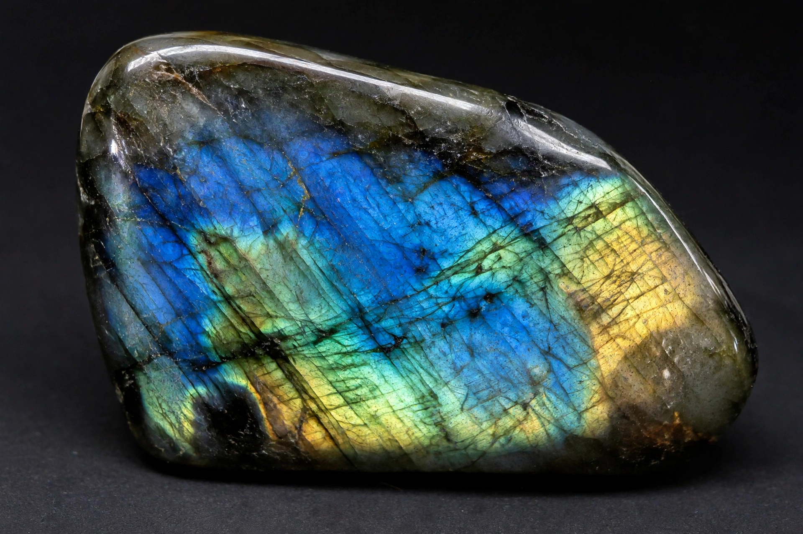

Labradorite is a calcium-enriched feldspar mineral first identified in Labrador, Canada, which can display an iridescent optical effect (or schiller) known as labradorescence. It is a member of the plagioclase feldspar series, with a composition between anorthite and albite, conventionally (Ca,Na)(Al,Si)4O8.

| Labradorite | |
|---|---|
| Category | Tectosilicate (plagioclase feldspar) |
| Formula | (Ca,Na)(Al,Si)4O8 |
| Crystal system | Triclinic |
| Mohs hardness | 6–6.5 |
| Lustre | Vitreous to pearly |
| Optical effect | Labradorescence |
Labradorite occurs in mafic igneous rocks such as basalt, gabbro, and anorthosite. Its base colour is typically grey to grey-green, but when light enters the stone it reflects from lamellar intergrowths inside the crystal, producing flashes of blue, green, gold, orange, or red. This effect, labradorescence, is not a colour on the surface but iridescence caused by internal structures that selectively reflect certain wavelengths. The most strongly coloured material, sometimes called spectrolite, comes from Finland.
The type locality is Paul's Island near Nain, Labrador, where Moravian missionaries found the stone in the 18th century. Deposits are also mined in Madagascar, Norway, Russia, Ukraine, and the Adirondack Mountains of New York. In Oregon, a transparent variety related to labradorite is sold as Oregon sunstone.
Labradorite is cut as a gemstone for jewellery and used as a decorative facing stone in architecture and countertops. Compare the related feldspar gem opal for another play-of-colour phenomenon, and see birthstones for feldspar gems in jewellery traditions.
Article recreated from memory for the muse-webcrawl project.